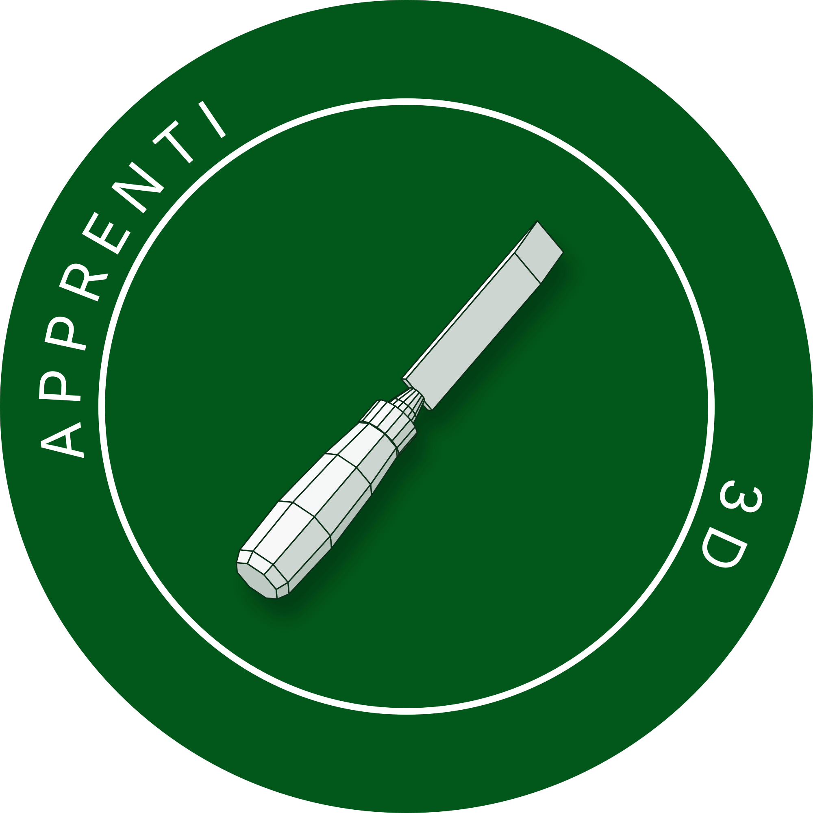

Apprendre SketchUp sur iPad
Neuf niveaux pour dessiner des meubles dans SketchUp. Un meuble par niveau, des cotes réelles en millimètres. Coche chaque étape une fois faite dans SketchUp.
Ta progression
Ton poste de travail
Petit lexique
Sauvegarde
Ta progression reste sur cet iPad. Copie-la de temps en temps dans une note : si tu effaces les données de Safari, tu pourras la recoller ici.